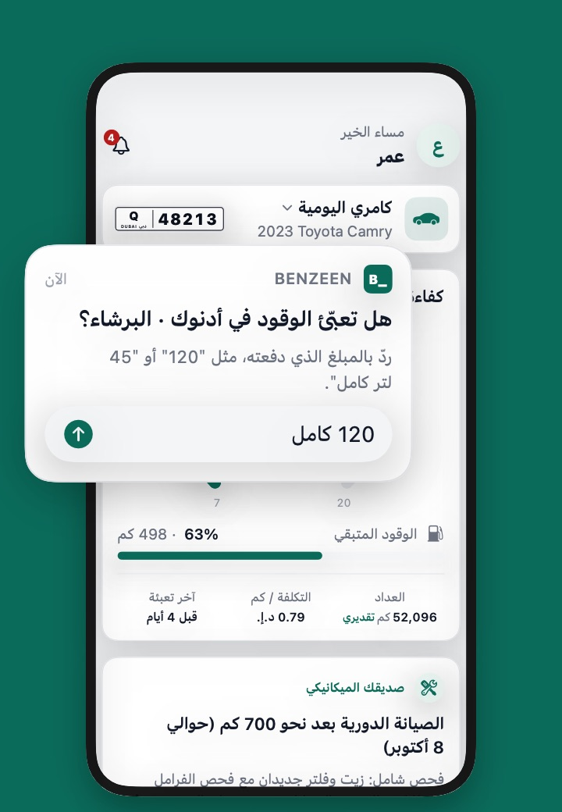
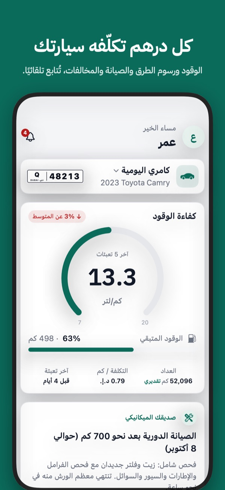
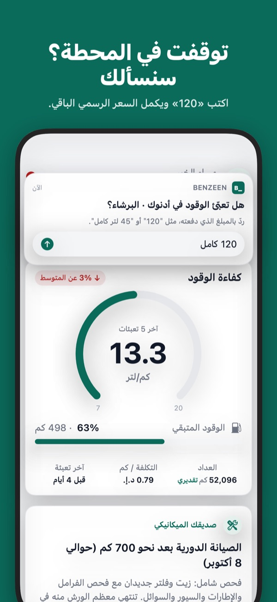
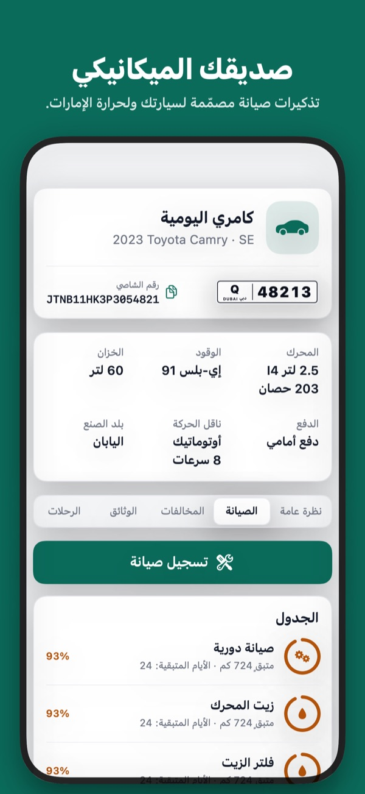
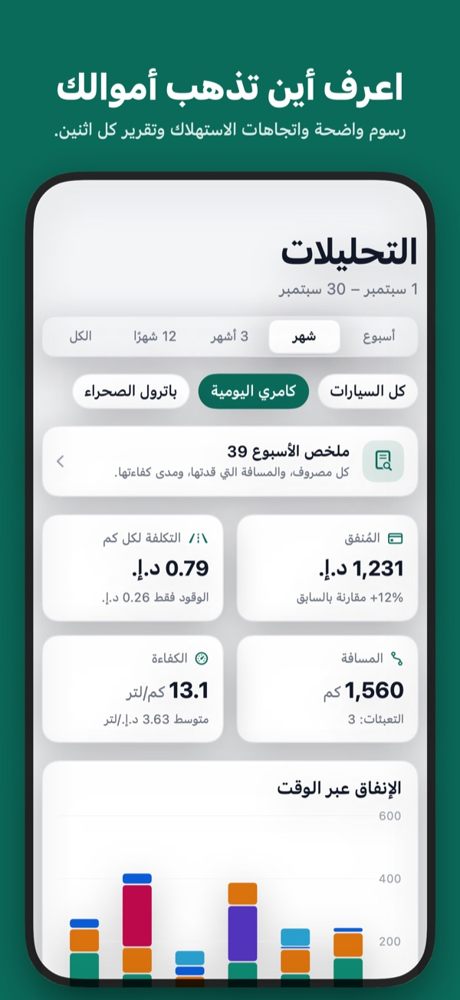
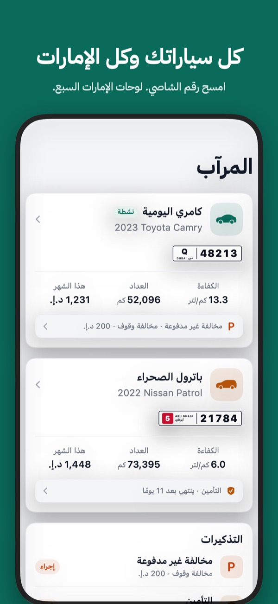

توقفت في المحطة؟ سنسألك
اكتب «120» من الإشعار، والسعر الرسمي يحسب اللترات. بلا إيصالات ولا كتابة.
متتبّع تكاليف السيارة في الإمارات · قريبًا على App Store
Every dirham your car costs.
الوقود وسالك ودرب والصيانة والمخالفات، تُتابع تلقائيًا. توقفت في المحطة؟ يسألك Benzeen_ كم دفعت. مررت ببوابة؟ تُحسب بالسعر الصحيح. وصديقك الميكانيكي يذكّرك قبل موعد تغيير الزيت.

امسح رقم الشاصي من الزجاج الأمامي أو من الملكية، وتُملأ الماركة والطراز والمحرك ونوع الوقود تلقائيًا.
يلاحظ Benzeen_ توقفك في محطات الوقود ومرورك ببوابات الرسوم، ويسألك سؤالًا واحدًا عند المضخة.
استهلاك الوقود بالكيلومتر لكل لتر، وتكلفة الكيلومتر، والمصاريف حسب الفئة، وتقرير واضح كل يوم اثنين.
اكتب «120» من الإشعار، والسعر الرسمي يحسب اللترات. بلا إيصالات ولا كتابة.
تذكيرات صيانة مبنية على جدول الشركة المصنّعة للحرارة والغبار، وعلى قيادتك الفعلية.
تُسجّل البوابات التي تمر بها بالتعرفة الحالية، بما فيها أوقات ذروة سالك.
وجّه الكاميرا إلى الزجاج الأمامي أو الملكية وتُملأ بيانات السيارة.
خصومات الدفع المبكر والنقاط السوداء ومواعيد التجديد في مكان واحد.
رسوم بيانية واضحة، واتجاهات الاستهلاك، وتقرير كل يوم اثنين.





سياراتك وتعبئاتك ومخالفاتك تبقى على هاتفك. سجّل الدخول عبر Apple فقط إن أردت نسخة احتياطية في iCloud الخاص بك، ولا يمكننا الاطلاع عليها. بلا إعلانات ولا تتبّع ولا تحليلات.
نعم، وبلا إعلانات.
ليس بعد. Benzeen_ متوفر لأجهزة iPhone.
الإمارات السبع مع كل أنواع اللوحات، وتُحتسب رسوم سالك ودرب تلقائيًا.
تبقى على هاتفك، والنسخة الاحتياطية الاختيارية في iCloud الخاص بك.
قريبًا على App Store. راسلنا للوصول المبكر وسنخبرك أولًا.
راسلنا وسنخبرك يوم وصول Benzeen_ إلى App Store.
أسئلة؟ راسلنا على support@benzeen.app